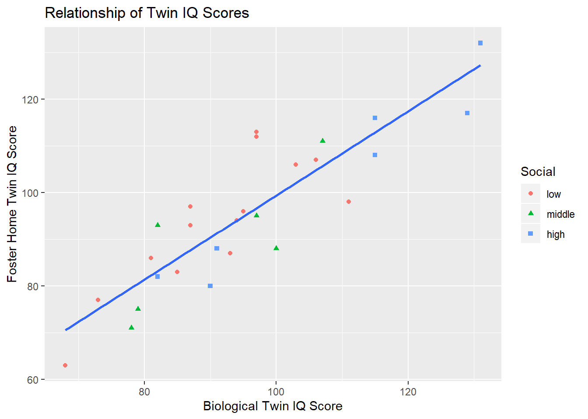

Workflow-Sample.RmdThe purpose of this vignette is to illustrate the typical steps and assumptions used by researchers when analyzing data. The illustration uses the data from a study of twin intelligence. In 1966, Cyril Burt published data obtained from 27 pairs of monozygotic twins. These 27 pairs were special cases in that one twin was raised in a foster home, while the other was raised by the birth parents. Burt measured the intelligence of the adult twins in order to determine whether environmental factors influence intelligence, or whether it is primarily a function of genetics. He also classified each twin pair as having come from a “low,” “medium,” or “high” social class.
Burt, C. (1966). The genetic determination of differences in intelligence: A study of monozygotic twins reared together and apart. British Journal of Psychology, 57, 137 –153.
This example uses packages that are part of the tidyverse. Installation of the complete tidyverse package will facilitate running this script.
Next, we clean data and prepare it for analysis. In this case, because we have repeated measurements (due to correlated twin scores) in the original data set, we will need both long and wide formats. The data are currently in wide format only. We also should obtain a variable for the difference in IQ scores for each twin pair.
iq_data_long <- gather(iq_data,
'Foster',
'Biological',
key = "Upbringing",
value = "IQ")
iq_data$IQ_Diff <- iq_data$Foster - iq_data$Biological
iq_data$Social <- as.factor(iq_data$Social)
iq_data_long$Social <- as.factor(iq_data_long$Social)
iq_data$Social <- fct_relevel(iq_data$Social,
c("low", "middle", "high"))
iq_data_long$Social <- fct_relevel(iq_data_long$Social,
c("low", "middle", "high"))Next, we construct graphical displays to illustrate the major features of the data. First, side-by-side boxplots to compare the foster twins IQ to the biological twins IQ.
ggplot(iq_data_long, aes(x = Upbringing, y = IQ)) +
geom_boxplot() +
labs(x = "Type of Upbringing",
y = "Intelligence Quotient",
title = "Comparison of IQ Scores for Twins with Different Upbringing")Here are boxplots to compare IQ score differences for each twin pair across the three SES categories.
ggplot(iq_data, aes(x = Social, y = IQ_Diff)) +
geom_boxplot() +
labs(x = "Socioeconomic Status",
y = "IQ Difference Scores",
title = "Comparison of Twin IQ Differences for SES Categories")Here is a scatterplot illustrating the relationship of IQ scores for foster home and biological twins. A regression line is included, as well as differing colors and shapes for the social categories. Social category does not appear to make much difference in the relationship, so a single regression line is sufficient.
ggplot(iq_data, aes(x = Biological, y = Foster)) +
geom_point(aes(color = Social, shape = Social)) +
geom_smooth(method = lm, se = FALSE) +
labs(x = "Biological Twin IQ Score",
y = "Foster Home Twin IQ Score",
title = "Relationship of Twin IQ Scores")
Descriptive statistics are indices of characteristics of a set of scores. We can calculate these for the entire set of scores, or for subsets. These should align with our graphs and provide more details.
Here are statistics comparing IQ scores for different types of upbringing.
iq_data_long %>%
group_by(Upbringing) %>%
summarize(mean(IQ),
sd(IQ),
min(IQ),
quantile(IQ, 0.25),
median(IQ),
quantile(IQ, 0.75),
max(IQ))
#> # A tibble: 2 x 8
#> Upbringing `mean(IQ)` `sd(IQ)` `min(IQ)` `quantile(IQ, 0~ `median(IQ)`
#> <chr> <dbl> <dbl> <dbl> <dbl> <dbl>
#> 1 Biological 95.3 15.7 68 83.5 94
#> 2 Foster 95.1 16.1 63 84.5 94
#> # ... with 2 more variables: `quantile(IQ, 0.75)` <dbl>, `max(IQ)` <dbl>Here are statistics comparing IQ difference scores for different social categories.
iq_data %>%
group_by(Social) %>%
summarize(mean(IQ_Diff),
sd(IQ_Diff),
min(IQ_Diff),
quantile(IQ_Diff, 0.25),
median(IQ_Diff),
quantile(IQ_Diff, 0.75),
max(IQ_Diff))
#> # A tibble: 3 x 8
#> Social `mean(IQ_Diff)` `sd(IQ_Diff)` `min(IQ_Diff)` `quantile(IQ_Di~
#> <fct> <dbl> <dbl> <dbl> <dbl>
#> 1 low 2.5 7.92 -13 -1.5
#> 2 middle -1.67 8.16 -12 -6.25
#> 3 high -4.29 5.41 -12 -8.5
#> # ... with 3 more variables: `median(IQ_Diff)` <dbl>, `quantile(IQ_Diff,
#> # 0.75)` <dbl>, `max(IQ_Diff)` <dbl>Here are the coefficients for the regression line in the model relating the foster home twin IQ score to the biological twin IQ score, as well as the correlation among these scores.
Inferential statistics attach a degree of probability to point estimates that are compared to hypothesized values or to interval estimates. Such statistics are a function of effect size, variation, and form of the population distribution. Inferences should not be made in isolation, but only to supplement graphical and descriptive analysis.
This generates a t-test confidence interval for the comparison of foster home twin IQ score to biological twin IQ score.
t.test(iq_data$Foster, iq_data$Biological)
#>
#> Welch Two Sample t-test
#>
#> data: iq_data$Foster and iq_data$Biological
#> t = -0.042767, df = 51.975, p-value = 0.9661
#> alternative hypothesis: true difference in means is not equal to 0
#> 95 percent confidence interval:
#> -8.874252 8.503881
#> sample estimates:
#> mean of x mean of y
#> 95.11111 95.29630This provides a p value for the test that all social categories have the same mean IQ score. It is followed by Tukey confidence intervals, to control the overall Type I error rate.
anova(lm(iq_data$IQ_Diff ~ iq_data$Social))
#> Analysis of Variance Table
#>
#> Response: iq_data$IQ_Diff
#> Df Sum Sq Mean Sq F value Pr(>F)
#> iq_data$Social 2 231.81 115.906 2.1006 0.1443
#> Residuals 24 1324.26 55.178
TukeyHSD(aov(iq_data$IQ_Diff ~ iq_data$Social))
#> Tukey multiple comparisons of means
#> 95% family-wise confidence level
#>
#> Fit: aov(formula = iq_data$IQ_Diff ~ iq_data$Social)
#>
#> $`iq_data$Social`
#> diff lwr upr p adj
#> middle-low -4.166667 -13.21826 4.884929 0.4939156
#> high-low -6.785714 -15.37281 1.801384 0.1405651
#> high-middle -2.619048 -12.93945 7.701360 0.8031459This provides a p value for the test that there is no relationshiop of the foster twin IQ score to the biological twin IQ score. It is followed by the construction of a confidence interval for the correlation among these variables.
anova(lm(iq_data$Foster ~ iq_data$Biological))
#> Analysis of Variance Table
#>
#> Response: iq_data$Foster
#> Df Sum Sq Mean Sq F value Pr(>F)
#> iq_data$Biological 1 5231.1 5231.1 87.563 1.204e-09 ***
#> Residuals 25 1493.5 59.7
#> ---
#> Signif. codes: 0 '***' 0.001 '**' 0.01 '*' 0.05 '.' 0.1 ' ' 1
cor.test(iq_data$Foster, iq_data$Biological)
#>
#> Pearson's product-moment correlation
#>
#> data: iq_data$Foster and iq_data$Biological
#> t = 9.3575, df = 25, p-value = 1.204e-09
#> alternative hypothesis: true correlation is not equal to 0
#> 95 percent confidence interval:
#> 0.7550380 0.9452009
#> sample estimates:
#> cor
#> 0.8819877